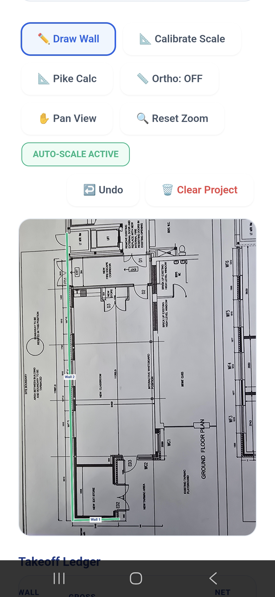
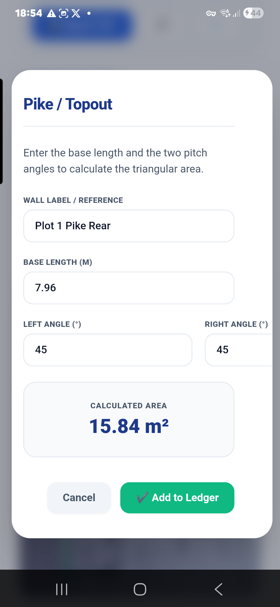
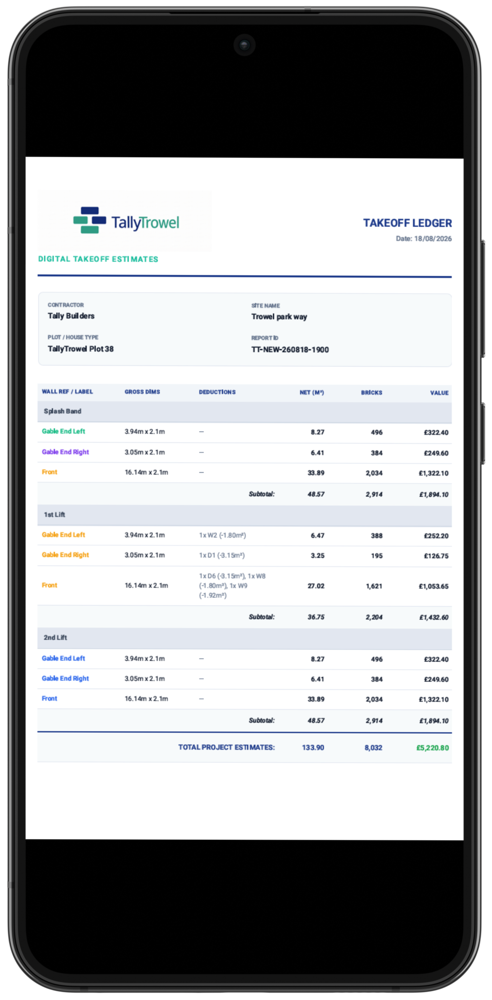

End-to-End Estimation

Surgical Takeoff
- Intelligent Tracing: Import plans and trace walls with magnetic snapping and haptic feedback.
- Magnifier Tool: Pop-up zoom ensures points land exactly on blueprint lines.
- Ortho Mode: Toggle for perfectly straight vertical/horizontal lines.
- Live Calibration: Scale your plan once using any known dimension.

Advanced Math
- Pike Calculator: Calculate gable areas by entering pitch and base.
- Smart Deductions: Subtract windows and doors in one tap.
- Wall Lifts: Group walls by Splash Band, Topout, or custom names.
- Pro Palette: 20+ custom colors to organize walls visually.

Visual Reporting
- Visual PDF: Generate a professional PDF report.
- Instant Sharing: Send reports directly via WhatsApp or Email.
- Auto-Save: Never lose data—every change is saved locally instantly.
- Site Library: Manage multiple plots and sites from one dashboard.
Built to Make Bricklaying Calculations Easier.
I built TallyTrowel because I wanted something that I would actually find useful myself. Working around bricklaying, I know how much time can be spent measuring, counting bricks and checking calculations — and sometimes going back over the same figures because you're not completely sure you've got them right.
The idea was simple: make those jobs quicker and make the figures easier to check. Instead of having calculations spread across bits of paper, notes and different tools, I wanted to bring the important parts of a masonry takeoff together in one place.
TallyTrowel isn't about replacing the experience of a bricklayer. It's about giving that experience a useful tool alongside it — something that can save time, help organise a job and give you another way to check your numbers before you order materials, price work or start laying.
I built it with bricklayers in mind because that's where I saw the need for it. Built by Bricklayers, for Bricklayers.
Why I wanted to build it.
I wanted to make something practical that saves time, makes the numbers easier to work through and helps bricklayers feel more confident in the figures they're using.
From Drawing to Results
Import Your Drawing
Bring your plan into TallyTrowel and draw first. You can calibrate the scale afterwards using a known dimension.
Measure & Calculate
Trace walls, add openings and use the built-in masonry calculations to work through your takeoff.
Review & Report
Check your figures, organise your work and generate a professional report ready to share.
Who Is TallyTrowel For?
A Simpler Way to Work Through Your Takeoff
| Traditional Way | With TallyTrowel |
|---|---|
| Manual calculations | Digital calculations in one place |
| Multiple bits of paper | Keep your project information together |
| Re-check figures manually | Make your calculations easier to review |
| Time spent working things out | Designed to make takeoffs quicker |
| Easy to lose track of quantities | Structured workflow for your takeoff |
From Plan to Professional Takeoff
TallyTrowel is designed to take you from your drawing to an organised masonry takeoff and professional report in a simple workflow.
Set Up Your Project
Tap Project > New Project, enter your Contractor, Site Name and Plot/House Type, then save your settings.
Load Your Plan
Tap Project > Load Plan and choose your blueprint or drawing from your device.
Draw Your Walls
Use Box Tool for a fast footprint or Draw Wall to trace individual walls.
Add Openings
Add windows and doors with their quantity, width and height so they can be deducted from the brick count.
Set the Scale
After drawing, calibrate the project using a wall with a known real-world length.
Check Your Takeoff
Use the Full-Screen HUD for live totals and the Takeoff Ledger for phase/lift and material breakdowns.
Generate Your Report
Tap Report to create a professional multi-page PDF with your visual map, breakdowns and totals.
Share Your Results
Save or print the PDF, or use WhatsApp and Email to send a summary of the results.
⏹️ Box Tool — Fast Footprints
Draw a rectangle over the house footprint, name the four walls, choose the wall construction and set the shared lift height. TallyTrowel automatically calculates the correct centre-line maths for the corners.
✏️ Draw Wall — Individual Walls
Tap point A and point B, then add the wall label, height and any windows or doors. Use the 📏 Ortho button when you want your lines to snap to perfectly straight angles.
🎯 Calibration
You do not need to calibrate before drawing. Once you have a wall with a known real-world length, use Drawing > Edit / Clone Wall > Calibrate Project with this Wall.
📊 Ledger & Full-Screen HUD
Full Screen gives you more drawing space and live totals. The Takeoff Ledger groups walls by Phase/Lift and shows material breakdowns and Grand Totals.
Want the Full Instructions?
The complete TallyTrowel End-User Manual covers project setup, drawing and estimating, calibration, Full-Screen HUD, Takeoff Ledger, reporting and sharing.
Moving Forward
Ready to Make Your Takeoffs Easier?
Join the TallyTrowel early-access list and be among the first to use the tools built specifically for masonry takeoffs.
GET EARLY ACCESS